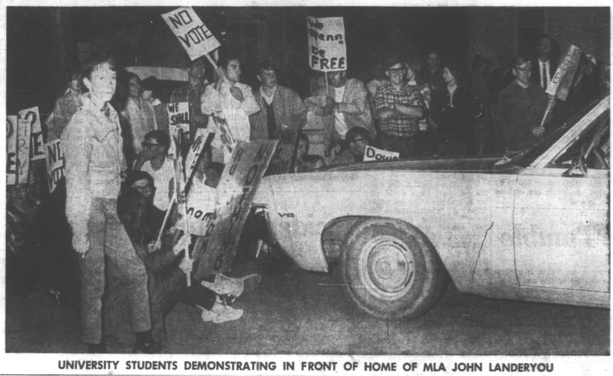
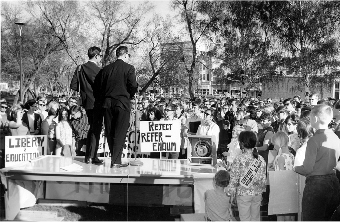
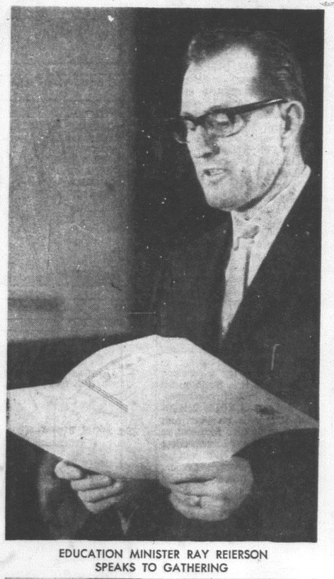
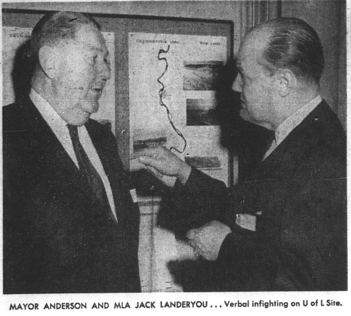
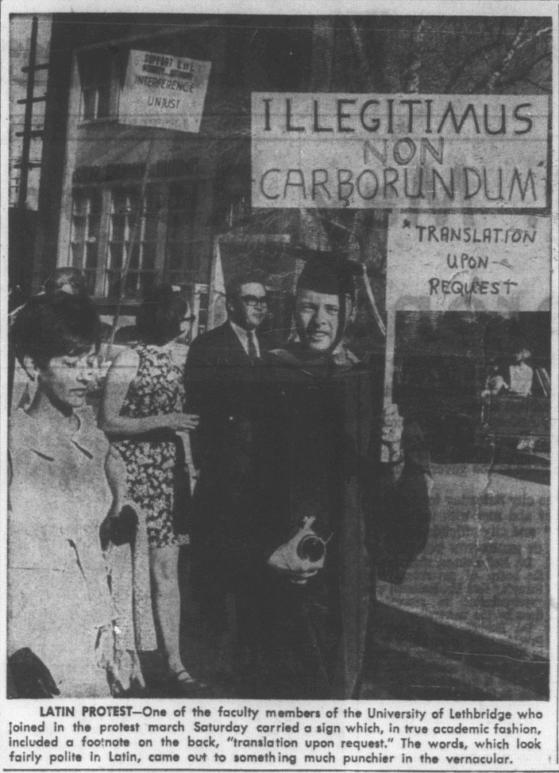
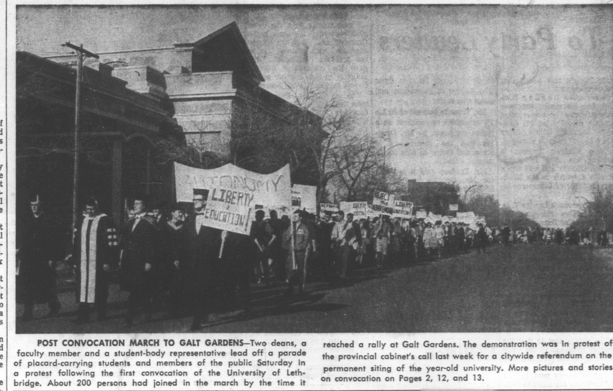

Controversy

“...opposing factions declared what amounted to open warfare. In a 'veritable flood of protests,' dedicated antagonists [to locating campus west of the Oldman] conjured up visions of a 'divided city,' a 'Berlin Wall,' 'dangerous' traffic hazards, and most of all exorbitant costs falling upon the hapless taxpayers" (Holmes, 1972, p. 118).
The North Lethbridge Businessmen's Association soon joined the fray.... Not surprisingly, the association promoted a north location for the university.... A smaller and quieter chorus in support of the university's decision could be faintly detected in the background[, r]allying behind the slogan "West is Best" (ibid).

“I thought students went to school to learn reading, writing and arithmetic but it appears they go to learn reading, writing and rioting” - Landeryou, as quoted by the Lethbridge Herald on May 17, 1968.

"On a fateful Friday, May 10, the relative calm that had descended upon the city and the university was shattered by a reverberating blast. Reierson notified N. D. Holmes:
...in view of substantial differences of opinion by local residents for and against the development of the University of Lethbridge on an alternate location and particularly west of the Oldman River... a referendum of the electors of the City of Lethbridge be taken. The Government will endorse whichever location is approved by simple majority.... Executive Council advocated keeping the ballot as simple as possible containing two statements. 1. I favor development of the University of Lethbridge on its present site. 2. I favor development of the University of Lethbridge on a site west of the Oldman River.
The cabinet edict instantly radicalized the university. Not the slightest illusion remained among governors, administrators, faculty and students. The charitable rationalizations with which some individuals had previously wished away earlier government intervention simply evaporated" (Holmes, 1972, pp. 125-6).

“[T]he contention of the majority [was] that Reierson's referendum was unworthy nonsense, political bunkum of the worst sort, and its wording preposterous. The west side site was the present site. There was no other and never had been" (ibid, p. 127).
The sentiment within the committee was that the real issue of the referendum was not the location of the university but confidence in the civic administration. It was observed that the current intrusion of naked political influence threatened to inflict permanent crippling injuries on the academic environment (ibid, p. 131).

"...such an environment [as a post-secondary instution] sharpened human weakness...creativity in universities was frequently stifled by ambition, jealousy, and, most dangerous of all, lust for power" (Stouck, 2013, p. 241).

"With their attention properly concentrated upon preventing the university from becoming a political punching bag for every demagogue and sychophant in sight, all finally resolved to resist the pernicious plebiscite with every available weapon" (Holmes, 1972, p. 127).
"On Saturday May 18, N. D. Holmes and other members of the board personally presented Reierson and Speaker with a written version of the university's response to the notion of a referendum. Then all donned gowns for convocation" (ibid, p. 128).
